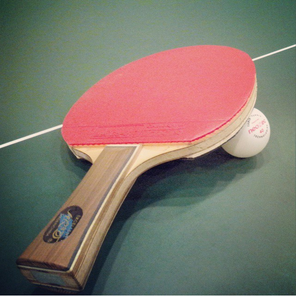

Большинство фоновых изображений являются текстурами, а не рисунками. Рисунки оказываются слишком перегруженными и отвлекают внимание от сообщения. Эти текстуры являются стандартными изображениями GIF или JPEG
